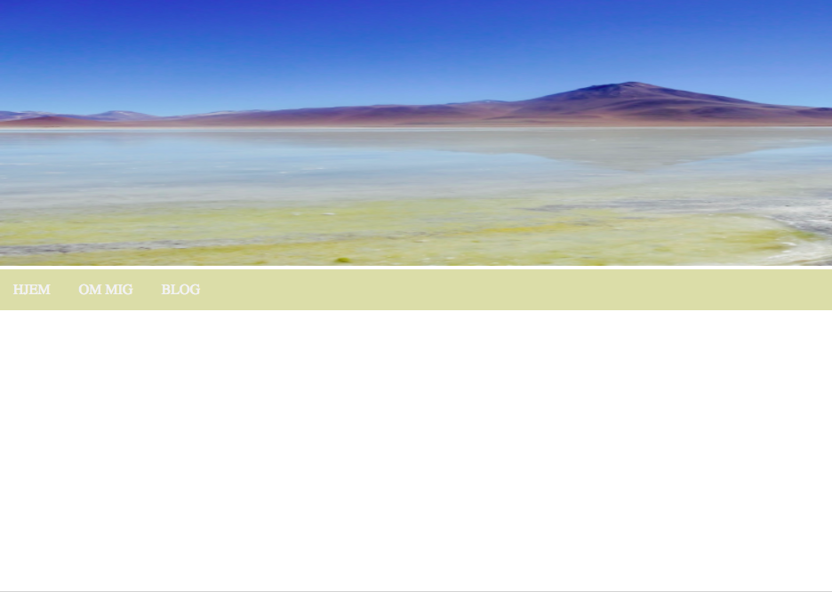
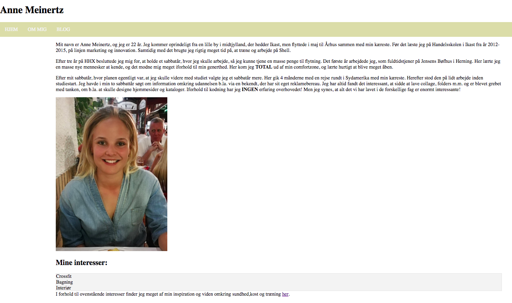

Første hjemmeside
Jeg har valgt at tage den første hjemmeside med, som jeg lavede i interaktionstimen i starten af semesteret. Jeg har valgt denne, da jeg selv synes at den giver et godt billede af, hvad jeg kunne dengang, til hvad jeg så har lært videre hen både ved case 1, 2 og 3, men også i selve undervisningen og på selvstudiedagene.

Processen fra den første hjemmeside og helt hen til denne case, synes jeg er fascinerende. Det tydelige spring ses helt klart fra den første hjemmeside og til case 2. På den første hjemmeside har jeg svært ved alt! Det eneste der var nemt for mig, var faktisk at lave selve navigationsbaren, men alt andet som f.eks. at lave en liste, sætte et billede ind og kode HTML siderne sammen var svært for mig. Når man ser på den første hjemmeside kan der ses, at den på ingen måder er gennemført pga. at jeg har haft svært ved en del ting.

Listen gad f.eks. pludselig ikke at virke, og jeg kunne på ingen måder løse dette problem selv. Der kan tydeligt ses, at der op til case 2 er blevet arbejdet meget med at lære dette. Både i interaktionstimerne, men også til selvstudiedagene. Hjemmesiden kan ses dette link.
Der er f.eks. heller ikke blevet benyttet nogen proces, hvor der er blevet tænkt over hvilke ting, der skulle indgå på siden, som i menubaren eller designprocessen. Derudover kendte jeg heller ikke til photoshop eller illustrator, hvilket også har gjort, at der ikke kom noget logo med på siden pga. manglende viden om hvordan man gjorde.